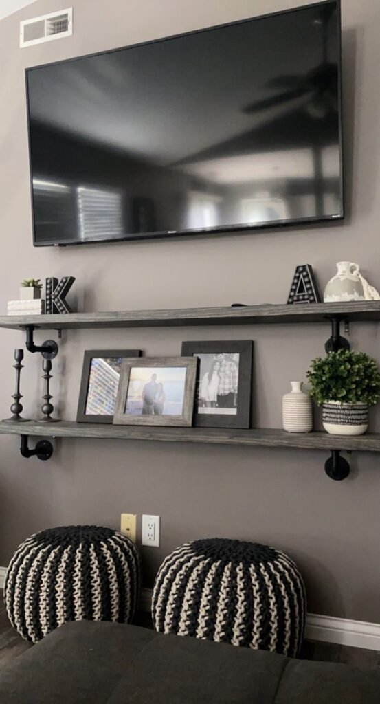
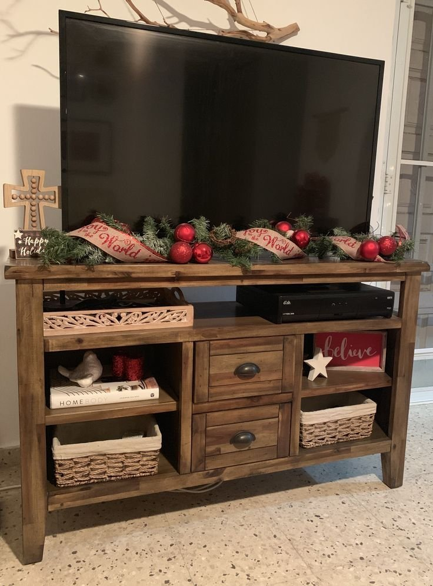
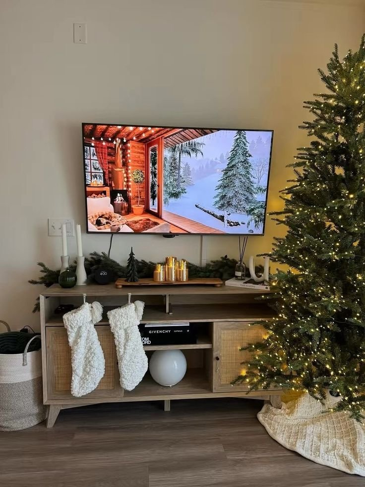
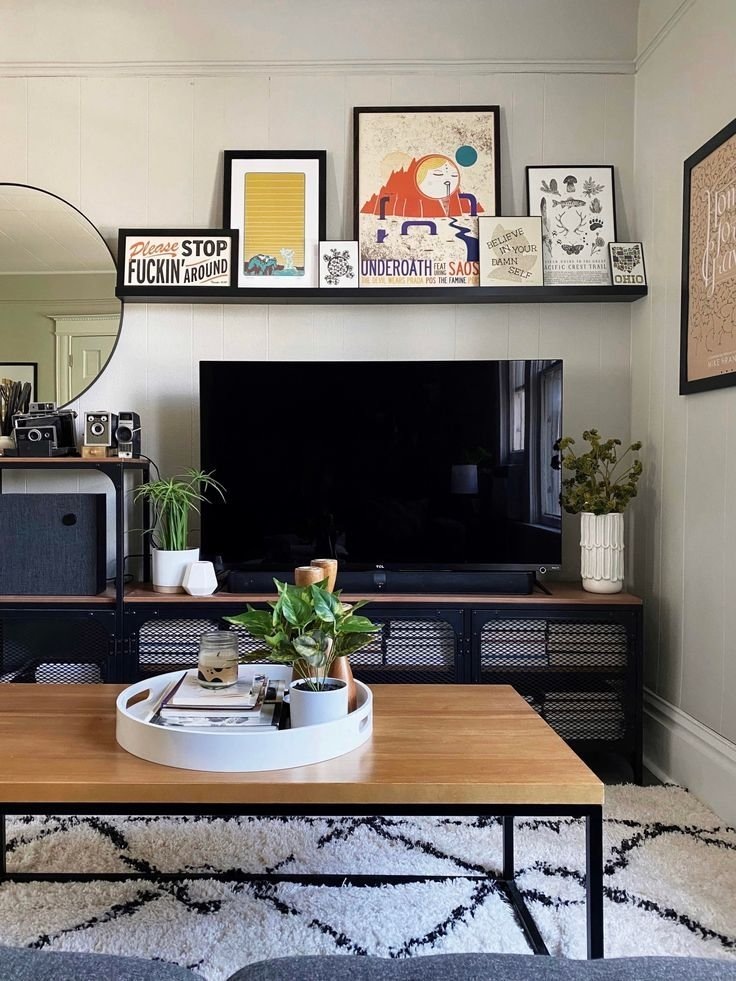
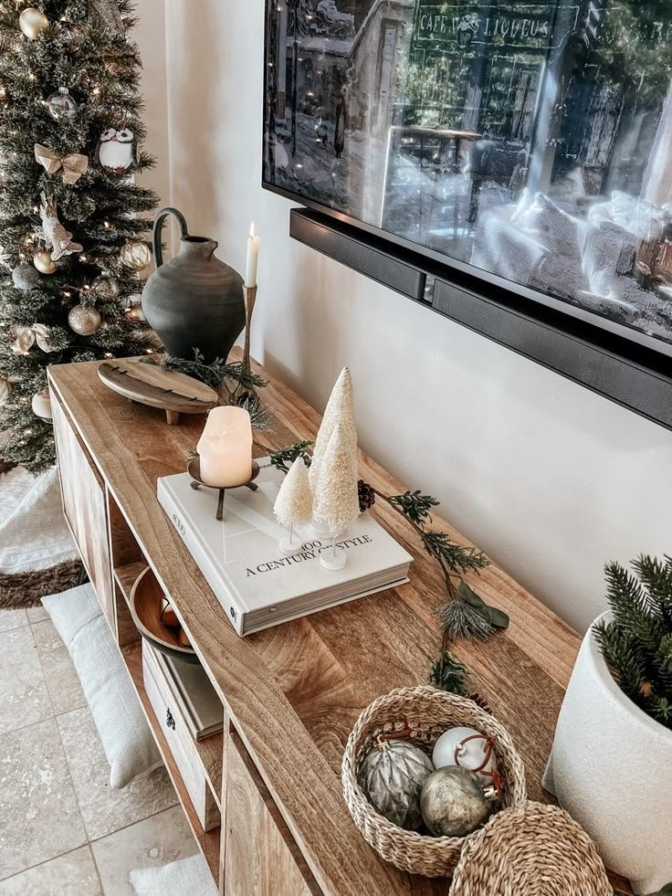
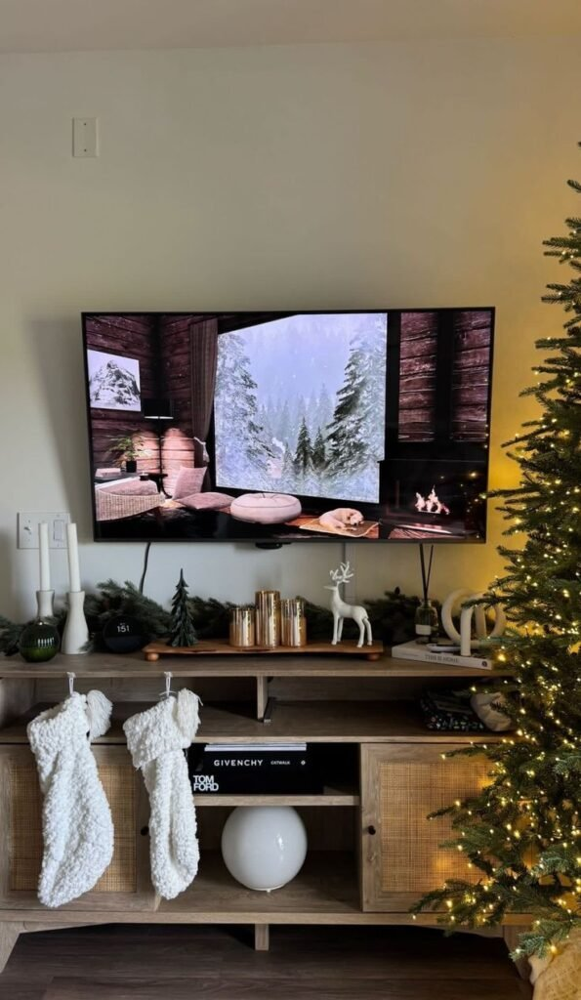
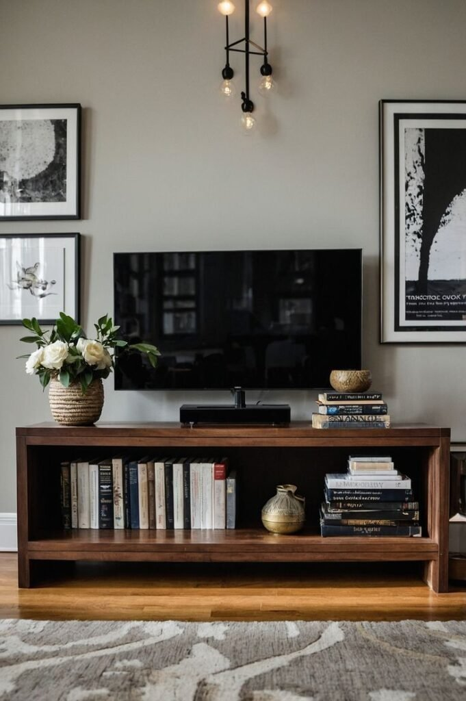
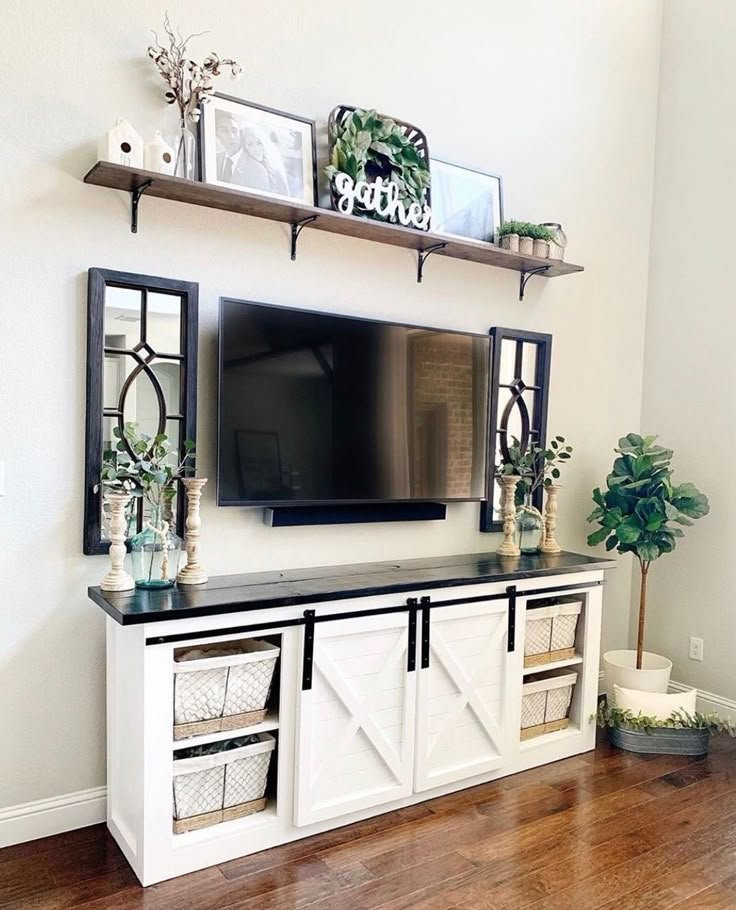
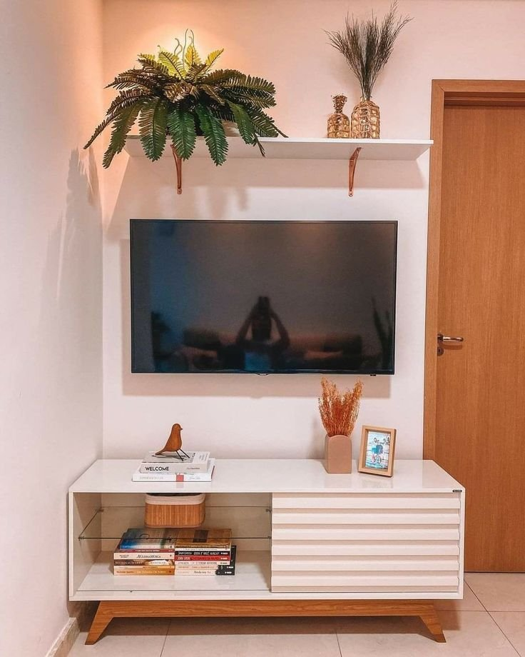
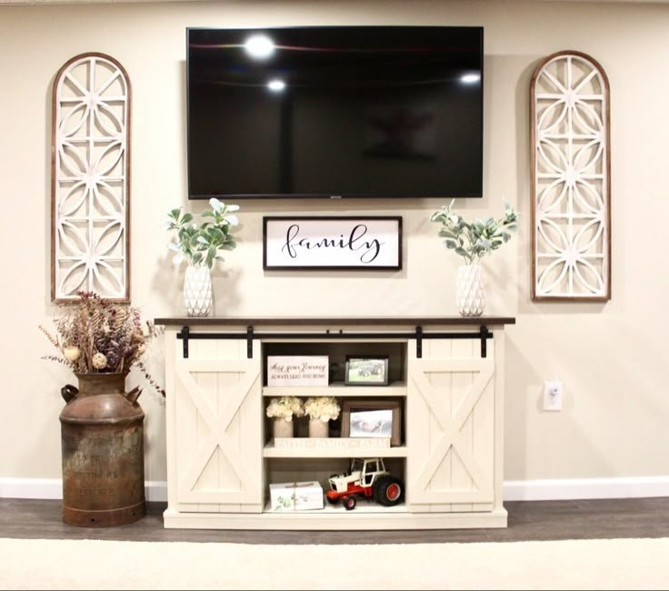

A TV stand often ends up as the most neglected surface in the whole living room, a spot for the remote, a stray cable, and not much else. But it's also one of the first things anyone actually sees walking into the room, which makes it worth a little real styling attention.
The most common mistakes are easy to avoid once they're named: overcrowding the surface until nothing stands out, ignoring scale so small objects get lost against a large TV, and forgetting function entirely in favor of pure looks. A good setup manages all three at once.

18 TV Stand Decor Ideas
1. Balanced Asymmetry
Perfect symmetry can feel a little stiff depending on the room. Asymmetry, balanced carefully, reads as considerably more natural.
A tall object on one side paired with shorter, stacked items on the other creates visual interest without looking planned.
It's an effortless-looking approach that's actually fairly deliberate once broken down, dynamic and modern, even though real thought went into the placement.
2. Personal Touches
This is the detail that matters most of everything on this list. A family photo, a travel souvenir, or any genuinely meaningful object changes the whole feel of the space.
Including even one personal piece is what separates a TV stand that feels like home from one that reads like a showroom display.
People notice real authenticity far more than they notice technical perfection, the personal piece is usually what actually gets commented on.

3. Mixed Textures
Texture keeps a TV stand genuinely interesting to look at, even with a fairly simple color palette.
Smooth ceramics, rough wood, and a soft fabric element together add real visual depth without introducing any extra clutter.
When a styled surface feels flat despite looking "done," texture is usually the missing ingredient.
4. Black Accents
A few black decor pieces visually connect the TV itself to the rest of the stand's styling.
A black vase, a metal frame, or a dark tray all help the screen blend in rather than visually dominate the space.
It's a subtle trick, but it consistently grounds the whole setup in a way that's easy to underestimate.
5. Hidden Storage
Decor genuinely looks better once the actual clutter has somewhere to disappear to.
Baskets tucked into open shelving, storage boxes, or fully closed cabinets all keep the visible surface clean.
This matters most in a family home, where remotes, cables, and odds and ends tend to accumulate fast, function has to come first, even in a styled space.

6. Cozy Candles
Candles bring an instant sense of coziness to a TV stand that's otherwise all hard surfaces and sharp lines.
Unscented candles work best for daily use, in neutral jars and a mix of different heights for visual interest.
Clustering a few together on one side of the stand softens the whole look, just remembering to actually blow them out matters more than it sounds like it should.
7. Floating Shelves Above the Stand
When the wall above the TV stand feels genuinely empty, a floating shelf fills that gap without adding bulky furniture.
Small plants, framed photos, and a few decorative objects work well up there, as long as the styling stays light.
Too much piled onto the shelf makes the whole TV area feel heavy, so balance matters more here than almost anywhere else on this list.
8. Sculptural Objects
A sculptural piece brings real personality to a TV stand without adding any actual clutter.
Abstract shapes, stone or ceramic pieces, and matte finishes all read as considered rather than decorative filler.
Placing it slightly off-center keeps the whole setup feeling dynamic, it functions almost like jewelry for the furniture underneath it.
9. Seasonal Decor
Swapping out TV stand decor by season is a small habit that makes a surprisingly big impact on how fresh the whole room feels.
Fall candles and dried florals, winter greenery with metallic accents, or light summer ceramics all keep the look current without a full redecorate.
It's one of the easiest ways to shake off that bored-with-the-living-room feeling without spending much time or money.

10. Art Leaned Casually
Leaning a piece of art against the wall instead of hanging it reads as relaxed and genuinely stylish.
An abstract print, a neutral landscape, or black-and-white photography all work well here, especially with a simple frame.
The leaned, slightly imperfect placement makes the whole setup feel layered rather than stiff, often more interesting than something hung perfectly straight.

11. Statement Lamps
Lighting changes the whole feel of a TV stand area, and a lamp specifically adds real height along with genuine ambiance.
A ceramic table lamp, a slim modern design, or a warm-toned shade all reduce the harsh contrast a bright screen creates in a dim room.
It's a small addition that pays off most during an evening movie night, when the rest of the room's lighting tends to stay low.
12. Warm Wood Accents
Wood adds genuine soul to a TV stand setup, especially when the television and furniture themselves lean sleek and modern.
A wooden bowl, a carved sculpture, or a rustic tray all soften what could otherwise feel like a cold, tech-focused corner of the room.
Even a single wood element grounds the entire setup, it's a small addition with an outsized effect.

13. Decorative Trays
Trays are genuinely useful here, corralling small items while still looking considered and styled.
Remotes, a candle, or a few small decorative objects all stay contained and easy to find once they have a tray to live on.
Wood brings warmth, while marble leans more elegant, either way, a tray makes the whole setup functional and polished at the same time.

14. Minimalist Decor
For anyone who finds clutter genuinely stressful, a minimal approach to the TV stand is the clear answer.
One statement object, plenty of negative space, and clean lines are the whole formula, nothing more required.
A single sculptural vase or tray is often enough on its own. The TV itself actually fades into the background more with a minimal setup, which sounds counterintuitive but genuinely works.
15. Books for Height and Personality
Books do real decor work beyond just sitting on a shelf, stacked horizontally, they act as genuine height anchors.
Tucked under a vase, beside a candle, or next to a sculptural object, a stack of books adds structure instantly.
Choosing books with neutral or muted covers keeps the look clean, and swapping them out seasonally keeps the whole setup feeling intentional rather than static.

16. Greenery That Softens the Screen
Plants have a way of fixing almost any decor problem, and a TV stand is no exception.
A tall plant positioned beside the stand balances the visual weight of the screen, while smaller plants directly on the surface add life without adding clutter.
A snake plant, pothos, or faux olive tree all work well here, bringing warmth and movement to an area that otherwise tends to feel a little cold.
17. Symmetrical Styling
Symmetry brings real order to a TV stand, and it's a reliable choice on days when putting together something more complex feels like too much.
Matching lamps on both ends, identical planters or sculptures, or evenly spaced objects all build that structured look.
It works equally well in a modern or traditional space, giving real structure without ever feeling like it's trying too hard.

18. Layered Neutral Decor
Neutral decor almost never fails. It calms the whole space down and makes the TV itself feel considerably less dominant.
A ceramic vase, a stack of neutral books, and one textured object like wood or stone, layered together in soft whites, beiges, and warm grays, build a genuinely calm setup.
This works especially well when the TV stand itself has clean, simple lines, the neutral palette lets those lines actually show.

Choosing the Right Style
The decor should genuinely match how the stand actually looks and how the room gets used, a sleek, modern console calls for a different approach than a warm, traditional one. There's no single right formula here, just a direction that fits the space already in place.

Final Thoughts
None of these require overthinking. A TV stand doesn't need to be redesigned from scratch, a few considered additions, layered thoughtfully, turn a purely functional surface into something that actually looks intentional.
Pick two or three ideas that genuinely fit the space, rather than trying to layer in everything at once. Simple additions, done with real intention, tend to outperform an overloaded surface every time.